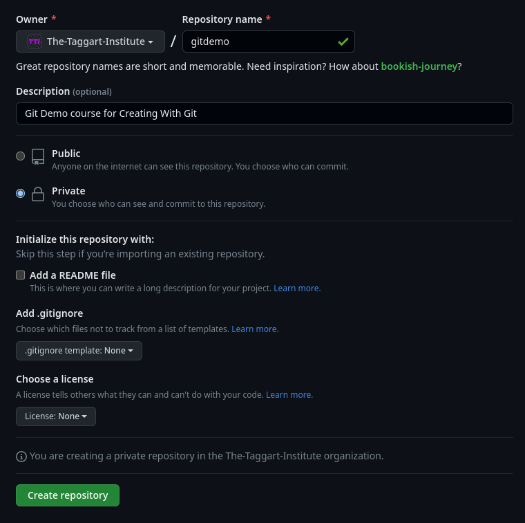
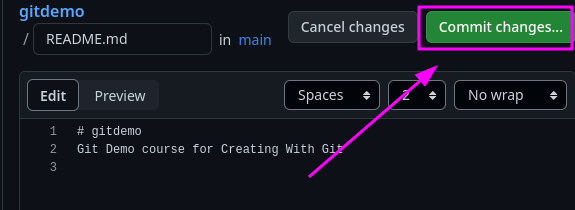
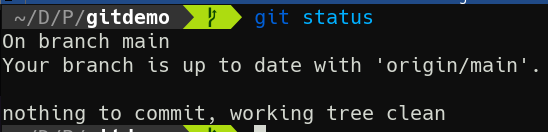
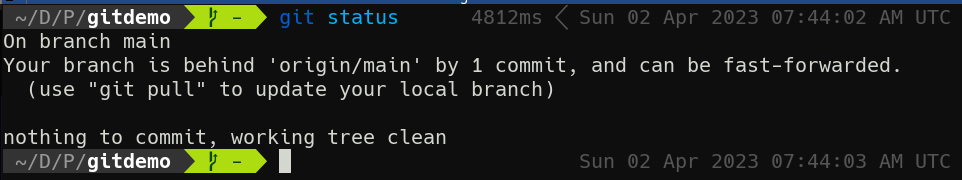
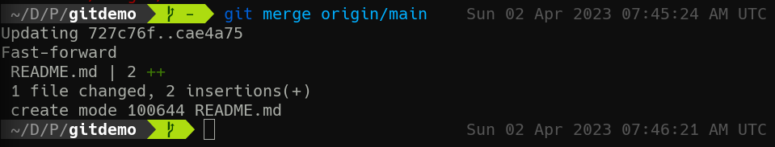

3-1: Remotes
This whole time, we've been pretending to be working with a team on different features and branches in our project. But in reality, doing so means coordinating respositories across multiple computers. And while we haven't yet done so with our exploration of Git, this was absolutely its design intention. This where remotes come in.
Remotes
All the way back at the beginning of the course, I asked you to fork this repo on GitHub and then clone your copy of the repo. And then we never mentioned those two operations again. Now I'd like you to navigate to that folder on your computer in your terminal, and run the following command:
cat .git/config
Now head over to our gitdemo repo that we've been working on this whole time. Run the same command. See any differences?
The cloned repo has several sections not present in gitdemo. For starters, a [remote "origin"] that seems to indicate where the repo came from in the first place.
Remotes are copies of the repository on another computer. Often, this is on a Git hosting service like GitHub (there are others, btw). Git will connect to this remote copy of the repo and pull new changes present there but missing locally, and push new changes that are local but yet to be sent to the remote.
When working with a team, usually a single remote is defined as the single source of truth for a project, and commits to the remote's main branch are carefully managed. Different hosting services offer different mechanisms for reviewing and approving changes, which we'll talk about shortly.
But first, we need to discuss a little more about how remotes work with our local repo. To make this clearer, run git branch -a in your fork of this course repo.
The -a option shows all branches, not just locals. With this option, you see remotes/origin entries as well. origin is Git's name for the default remote, and is assigned to a source repo when we clone it.
You can have more than one remote, for example a backup, or an upstream version of the project. But most repos hosted remotely have just the one.
Git Hosts
Speaking of hosts, while GitHub is by far the most well-known, there are several other choices for Git Hosting! Here are few to check out:
Remotes In Action
We've seen git clone do its thing, but there's actually quite a bit going on under the hood. To demonstrate, we're going to add a remote to gitdemo manually. To do this, you'll need a GitHub account, but you already have one of those!
While logged in, head to https://github.com/new. We're making a new repo on GitHub. Call it gitdemo. You can make it private if you like. Don't bother adding a README or anything else. Your options should look something like this:

Create that thing! GitHub will then helpfully give you some pointers on how to connect a local repo to it. But don't jump ahead; we're doing it step-by-step.
Step 1: Add a Remote
Get your Terminal into the gitdemo folder. Here's where we add a remote manually.
git remote add origin git@github.com:your-username/gitdemo.git
We've already created a main branch, so we're all set there.
If you cat .git/config now, you'll see a remote set up!
Step 2: Connect Local main to origin/main
Right now, Git doesn't know that your local main has anything to do with main on GitHub. Well in fact, right now GitHub's main doesn't exist. Let's fix that.
git push -u origin main
And there's git push! This does 2 things: it creates a main branch on GitHub by uploading our local commits; and it sets up our local main to track the new main on GitHub. You can confirm this by examining .git/config. There's now a new [branch "main"] section that points to origin as its remote.
Now that we have a remote, let's demonstrate merging changes from it to our local copy—also known as a pull.
Making Remote Changes
Luckily, GitHub is making a very helpful suggestion for us in terms of remote changes: adding a README!
Let's do it! Click that button. You'll be taken to GitHub's built-in editor for our new file. It's fine as-is; just hit that big green "Commit changes..." button.

And click through again for the default commit message.
Hey, now there's a README.md on the GitHub version of main. But our local is missing it.
Fetching Remote Changes
You might be thinking the solution is git pull, and you're right, but slow down! git pull, much like git clone, is actually multiple Git commands disguised in a trenchcoat.
First, let's run git status to see how things stand.

Now that we have a remote, git status provides new information. But we know it's wrong! Our branch is not uo to date with GitHub! What's up?
This is important: Git does not fetch remote changes automatically. But we can. Do so with git fetch. Now run git status again.

Aha! Now it knows.
While it tells us we can run git pull, here's a secret: git pull is git fetch + git merge <remote branch>.
So at this point, if you run git merge origin/main, you'll perform exactly what git pull would have done.

Nobody actually does this; git pull is way more convenient. But I wanted you to understand what was happening underneath. Because Git maintains a local copy of the remote branch, it's available for merging after a fetch. Pulling is just a combination of those two operations.
Okay, that'll do it for remotes. Up next, we'll talk about how to handle multiple remote branches and merging changes to main.
Check For Understanding
If pull is a combination of fetch and merge, what happens on the remote during git push?